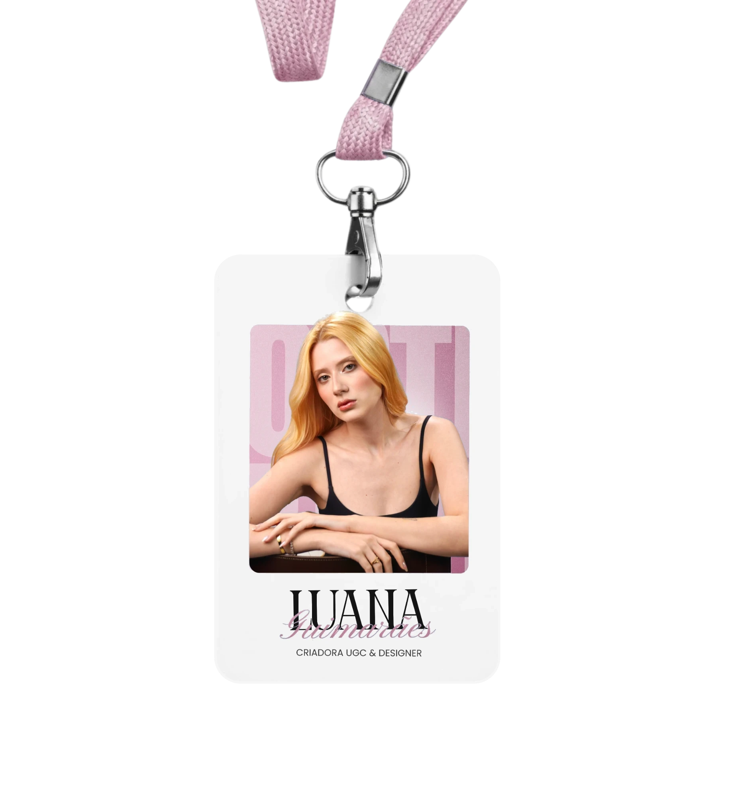

Lista completa
Modelos escondidos no Canva
As buscas que eu uso para achar modelos bonitos e fugir do óbvio. Toca em copiar e cola na busca do Canva.
Como usar: abre o Canva, toca em Modelos, depois na lupa, e cola o nome. Os nomes funcionam melhor em inglês, do jeito que estão aqui.
Quer um portfólio com essa cara?
Eu crio portfólios personalizados para creators, pensados para a marca entender rápido por que contratar você.
Quero o meu Me segue no Instagram